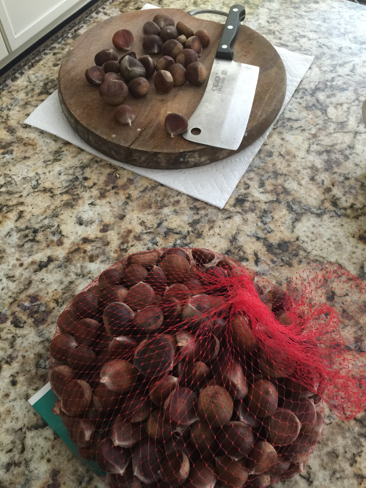
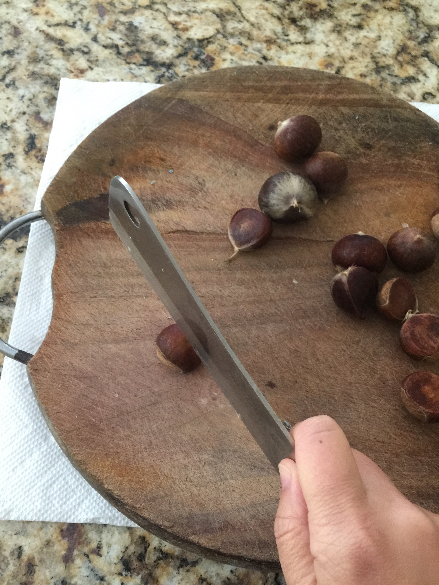
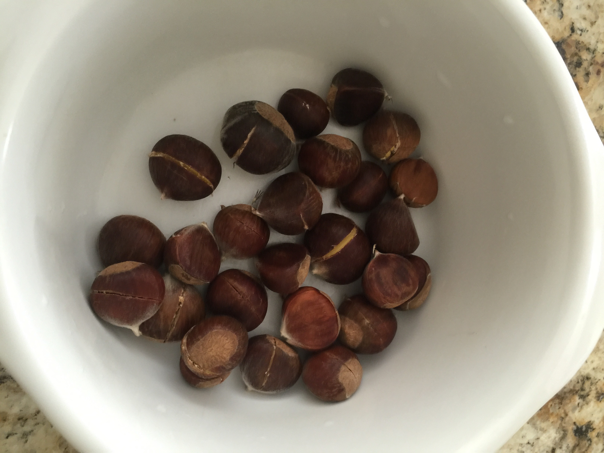
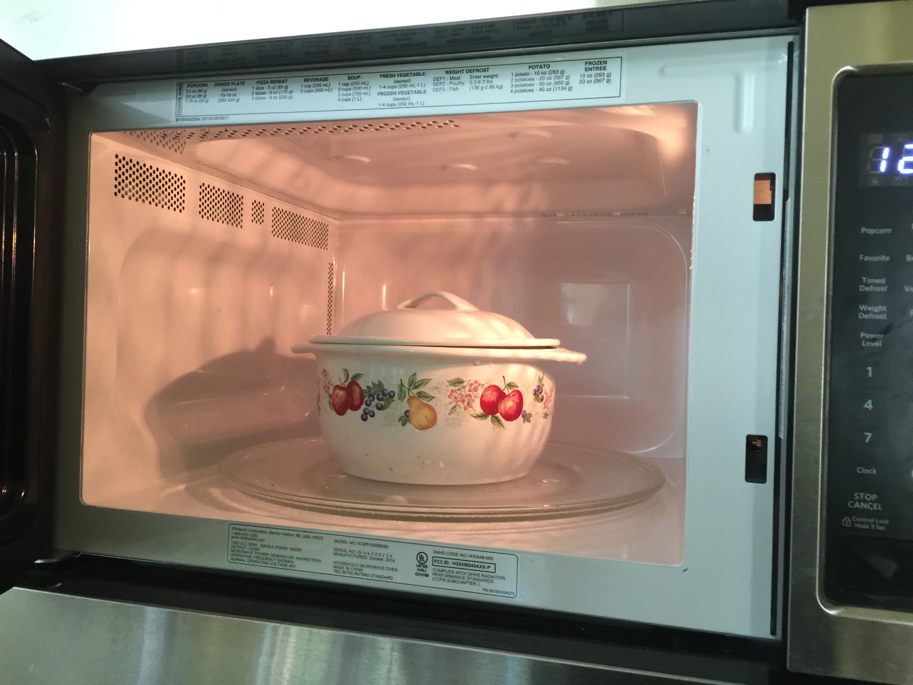
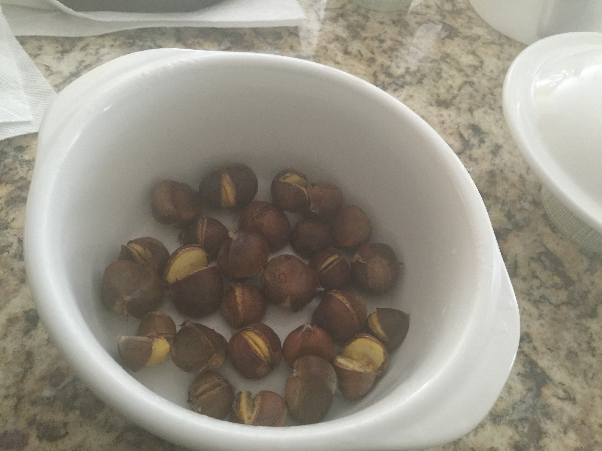
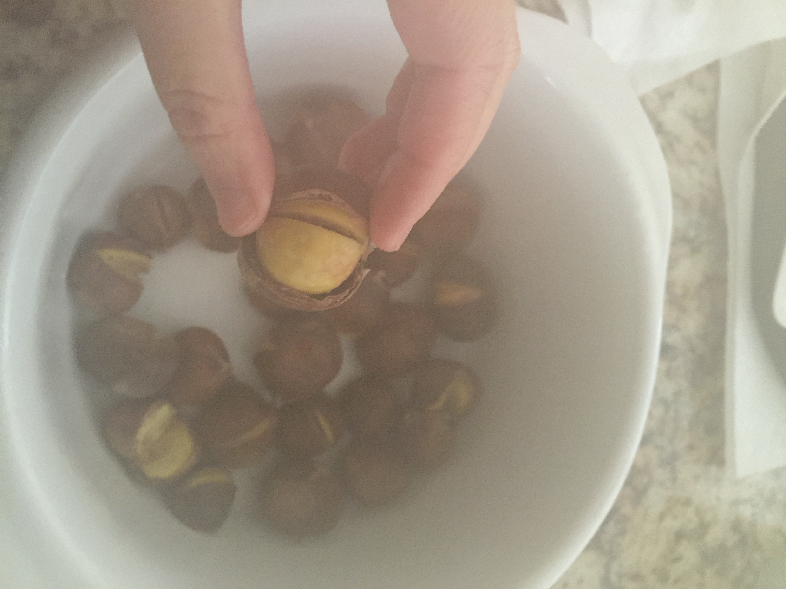

A REAL Simple Way To Eat Chesnuts!
Materials:
A microwave-safe bowl and a Chef's knife
Ingredients:
Steps:
1. Place the chesnuts and the chef's knife on the cutting board.

2. Take a chesnut and place it flat side down. With the Chef's knife, cut an line in the center through the chesnut skin and halfway into the chesnut. Repeat for all the chesnuts.

3. Next, place the chesnuts in a microwave-safe bowl.

4. Put the bowl in the microwave. Microwave for 1-2 minutes, depending on the sizes of your chesnuts.

5. Take the chesnuts out of the microwave. As soon as they are cool enough to touch, use your fingers to peel away the skin.

6. Dip in some honey or maple syrup (optional), and enjoy your I Beat The Deer Chesnuts!
